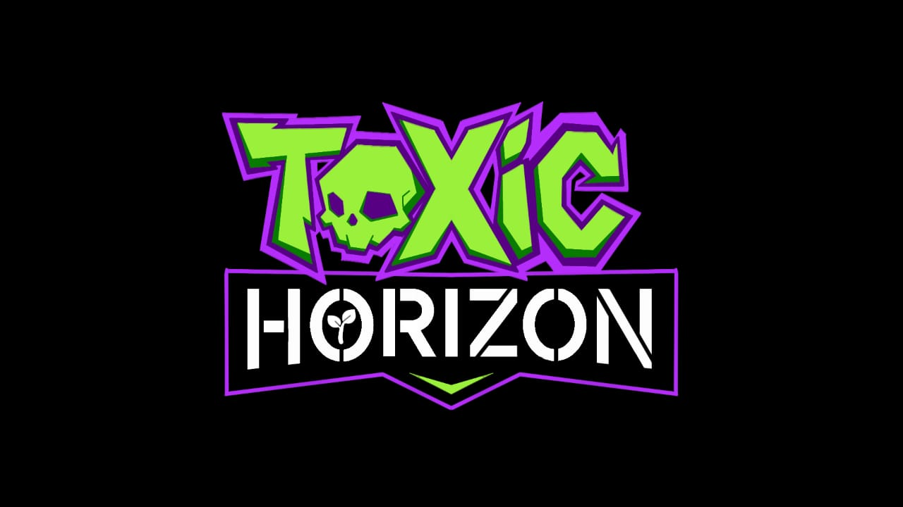

La Tercera Guerra Mundial dejó un planeta sumergido en radiación, desechos tóxicos y ecosistemas al borde de la extinción.
Engendradas por la lluvia radiactiva y experimentos militares fuera de control, acechan a los últimos refugios humanos.
Tras perder su hogar en un brutal ataque, Kaell se une a la resistencia para rescatar el futuro de la humanidad.
Una tecnología avanzada capaz de purificar la radiación y restaurar la vida biológica en las zonas muertas.